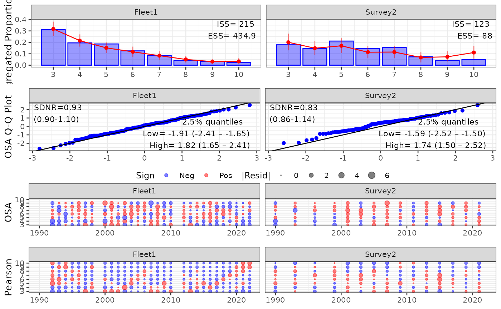
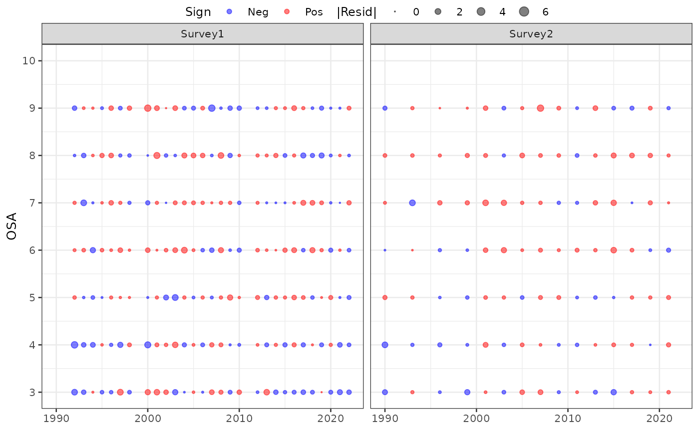
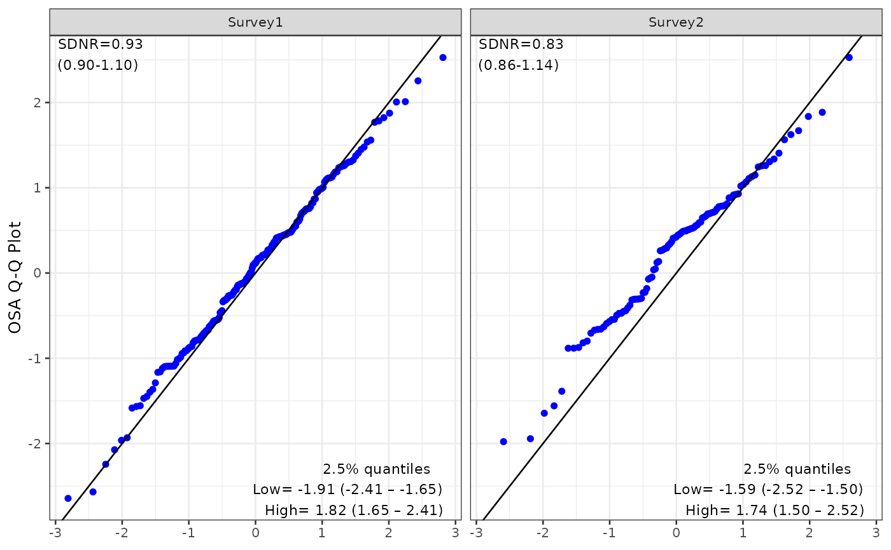
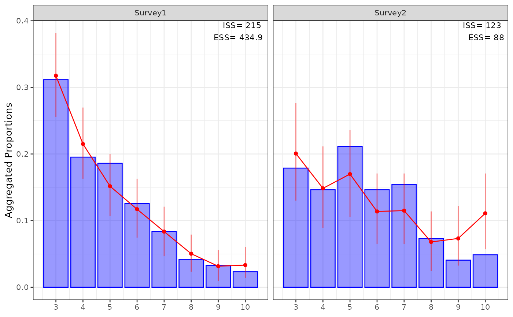

Plot OSA residuals for one for more fleets
Usage
plot_osa(
input,
plot = TRUE,
add_agg_CI = TRUE,
add_sdnr_CI = TRUE,
add_QQ_quantiles = TRUE,
use_agg_proportions = TRUE,
outpath = NULL,
figheight = 8,
figwidth = NULL,
hjust = -0.1,
vjust = 1.1
)Arguments
- input
a list of the output from one more runs of
run_osa, which includesres, a long-format dataframe with the following columns: fleet, index_label (indicates whether the comp is age or length), year, index (age or length bin), resid (osa), andagg, a dataframe with the observed and expected values for the index aggregated across all years (and appropriately weighted by N)- plot
Whether to plot and return the ggplot object (default) or return the underlying data
- add_agg_CI
Whether to add an interval showing the range containing 95% of simulated data. Note that this simulated data interval does not include parameter uncertainty.
- add_sdnr_CI
Whether to add a 95%confidence interval to the SDNR value for the QQ plots. See details section for further information.
- add_QQ_quantiles
Whether to add text showing the 2.5 and 97.5 95 context about misfit in the tails.
- use_agg_proportions
Whether to plot aggregate fits as proportions or counts. The latter makes it easier to see sample size differences among fleets.
- outpath
(default=NULL and no figure is saved) directory to save figure to (e.g., "figs").
- figheight
(default=8 in) figure height in inches, user may want to increase if they have a large number of ages or lengths
- figwidth
(default=NULL) by default the function scales the figure width by the number of fleets being plotted. user may want to overwrite depending on other variables like the number of years in the model.
- vjust, hjust
Values to control placement of the SDNR text on QQ plots. See
?geom_textfor more details.
Value
Creates a multipanel figure with OSA bubble plots, standard normal QQ plots, and aggregated fits to the composition data for one or more fleets. Also returns these plots as an outputted list for further refinement by user if needed (if plot=TRUE, otherwise it returns the underlying data.frames as a list). Outlying residuals are defined as being greater than an absolute value of 3 and identified in the bubble plots as a triangle. The QQ plots include the 3 and identified in the bubble plots as a triangle. The QQ plots include the standard deviation of the normalized residuals (SDNR; Francis, 2011), which if the models assumptions are met, should be 1.
Details
Standard Feviation of the Normalized Residuals (SDNR): SDNR is calcaluted as sd(resid) because under a correctly specified model the OSA residuals are iid standard normal and thus already normalized. The SDNR will follow a Chisq distribution with degrees of freedom of (n-1) where n is the number of residuals (after dropping a bin). Francis (2011) suggests only an upper confidence limit for indices, but here we are interested in overfit as well and so calculate a two-sided 95% confidence interval. This is given in parentheses below the SDNR value. We caution against strict threhold tests of this and instead suggest using it to give context to the size of SDNR.
Residual Truncation in Bubble Plots: To maintain visual interpretability and ensure bubble size scales remain consistent across different stock assessments, Pearson and OSA residuals with absolute values exceeding 6 are capped at that threshold for plotting. This prevents isolated, uninformative extreme outliers in one model or fleet from squishing meaningful residual patterns in others. When truncation occurs, a warning is issued detailing the original untruncated values.
References
Francis, R.C., 2011. Data weighting in statistical fisheries stock assessment models. Canadian Journal of Fisheries and Aquatic Sciences, 68(6), pp.1124-1138.
Examples
# GOA pollock info
repfile <- afscOSA::goapkrep
datfile <- afscOSA::goapkdat
# ages and years for age comp data
ages <- 3:10
yrs <- datfile$srv_acyrs1
# observed age comps
myobs <- repfile$Survey_1_observed_and_expected_age_comp[ ,ages]
# predicted age comps from assessment model
myexp <- repfile$Survey_1_observed_and_expected_age_comp[ ,10+ages]
# assumed effective sample sizes
myN <- datfile$multN_srv1 # this gets rounded
#
out1 <- run_osa(obs = myobs, exp = myexp, N = myN, fleet='Survey1',
index = ages, years = yrs, index_label = 'Age')
# survey2
yrs <- datfile$srv_acyrs2
obs <- repfile$Survey_2_observed_and_expected_age_comp[ ,ages]
exp <- repfile$Survey_2_observed_and_expected_age_comp[ ,10+ages]
N <- datfile$multN_srv2 # this gets rounded
out2 <- run_osa(fleet = 'Survey2', index_label = 'Age',
obs = obs, exp = exp, N = N, index = ages, years = yrs)
# needs to be in list format
input <- list(out1, out2)
# this saves a file in working directory (or user-defined outpath)
# called "osa_age_diagnostics.png"
osaplots <- plot_osa(input)

# extract individual figures for additional formatting:
osaplots <- plot_osa(input, plot=FALSE)
osaplots$bubble

osaplots$qq

osaplots$aggcomp
